Gunderup 1
Grobkörniger, gräulicher Granit
Höhe: 246 cm
Größte Breite: 74,5 cm
Runenhöhe: zw. 10 -16 cm
Runeninschrift :
Toke errichtete diesen Stein und gedenkt damit den Toten, seinem Stiefvater Abe, einem wohlgeborenen Thegn und seiner Mutter Tove. Sie liegen beide in dem Hügel. Abe machte Toke zu seinem Erben.
Gunderup 2
Feinkörniger, geschichteter, gräulicher Granit
Höhe: 225 cm
Größte Breite: 97 cm
Größte Dicke: 25 cm
Runenhöhe: 5,5 und 7,3 cm
Runeninschrift :
Østen setzte diesen Stein für seinen Vater Asulv
28 - Gunderup 1 (auch Fjellerad Stein genannt) - Letztes Update 17.08.2025
Listennummer : DR 143 / DK NJy 46
Navidaten: 56.94136 10.01381 oder: Hadsund Landevej 527, 9260 Gistrup
Transliteration:
Seite A: : tuki : raisþi : stini : þąisi : auk : karþi : kub(l) (:) | : þausi : aft aba : mak : sin : þaikn : kuþan : auk :
Seite B: : tufu : muþur : siną : þau : lika : baþi : i : þaum : hauki : | abi : uni : tuka : fiaR : sins : aft : sik :

Das ist ein Luftfoto vom 17.04.2023 von Skråfoto, das die Kirche in Gunderup zeigt. Skråfoto ist eine Webanwendung, die von Klimadatastyrelsen weltweit kostenlos bereitgestellt wird - Freie Nutzung unter Beachtung der Lizenz: CC BY 4.0. Die Aufnahmen werden seit 2017 alle zwei Jahre erneuert und neben einer Senkrechtaufnahme wird ein Schrägbild aus jeder Himmelsrichtung angeboten, das man über eine Adresssuche aufrufen kann.
Die Kirche in Gunderup habe ich bereits mehrmals aufgesucht. Zuerst am Dienstag, 02.08.1988, am Samstag, 17.08.1991, am Sonntag, 02.07.2000 (geschlossen) und nun im Rahmen meiner 2022er Jütland Wikingertour am Donnerstag, 02.06.2022.
Die (relativ schlechten) Fotos der beiden Runensteine im linken Frame sind aus dem Sommer 1991. Damals wurde noch ein "Dia" fotografiert, das ich später für viel Geld im Foto-Laden digitalisieren und auf eine CD brennen ließ. Das liegt ja aber auch mehr als 30 Jahre zurück! Nun habe ich beim neuerlichen Besuch zahlreiche digitale Fotos anfertigen können.
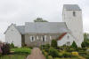 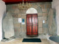 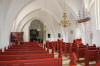 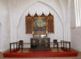 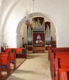 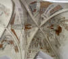
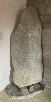 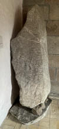 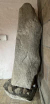 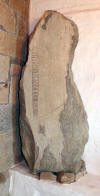 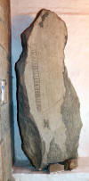 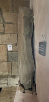
Der ursprüngliche Platz dieses Runensteines war bei einem Hügel auf einem Feld bei Fjalrø, südlich von Gunderup - zwischen Hals und Fjellerad. Im Jahr 1850 wurde er auf Geheiß von Prof. Jens Jacob Asmussen Worsaae (*14.03.1821 - 15.08.1885, dänischer Archäologe und Vorgeschichtler - link-LIVES - Bestattungsprotokoll),
 Bildquelle: Fotografie
zw. 1863-1900 von Fotograf Budtz Müller
(*26.12.1837 -
30.12.1884) -
Det Kgl. Biblioteks billedsamling - Lizenz:
Public Domain
Bildquelle: Fotografie
zw. 1863-1900 von Fotograf Budtz Müller
(*26.12.1837 -
30.12.1884) -
Det Kgl. Biblioteks billedsamling - Lizenz:
Public Domain
der ihn im Rahmen seiner Antiquarischen Reise durch Jütland dort vorfand, unter enormer Kraftanstrengung in den Kirchhof von Gunderup verbracht.
Zu der Zeit hatte man es nicht für möglich gehalten, ihn aufgrund seines Gewichtes und seiner Ausmaße ins Waffenhaus der Kirche verbringen zu können. Erst 1895 wurde er auf Drängen von Prof. Ludv. F. A. Wimmer (*07.02.1839 - 29.04.1920, Philologe und Runenforscher - link-LIVES - Politiets registerblade - Bestattungsprotokoll)
 Bildquelle:
Fotografie zw. 1877-1900 von Fotograf Hansen & Weller
-
Det Kgl. Biblioteks billedsamling - Lizenz:
Public Domain
Bildquelle:
Fotografie zw. 1877-1900 von Fotograf Hansen & Weller
-
Det Kgl. Biblioteks billedsamling - Lizenz:
Public Domain
nach dessen zweitem Besuch vor Ort in das Waffenhaus jener Kirche gebracht, wo er heute noch - gemeinsam mit dem Runenstein Gunderup 2 - steht.
Wenn man den Runenstein genau betrachtet fällt einem sofort auf, dass die rechte Runenlinie durch die schwache Einritzung nur angedeutet und im Vergleich zu den anderen nachlässig ausgeführt ist. Kulturhistorisch gesehen beinhaltet die Ritzung einer der interessantesten wikingerzeitlichen Inschriften. Der Stein wird auf die Zeit von 900 - 965 datiert. Die Inschrift verläuft bustrophed (abwechselnde Schreibrichtung) und beginnt in der linken Linie von unten nach oben gelesen. In der nächsten Zeile geht es von oben nach unten weiter. Auf der rechten Steinhälfte werden die beiden Runenbänder nach dem gleichen Schema gelesen.
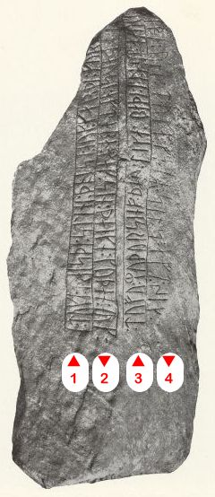
Leserichtung von mir visualisiert
Bildquelle: Erik Moltke - Jon Skonvig og de andre runetegnere. Et bidrag til runologiens historie i Danmark og Norge, Band I, Billeder og Kildetext, 1956 - S. 69" - Lizenz: CC-BY-SA
Der Hügel, in dem Abe und Tove begraben wurden, existiert heute nicht mehr, da er im Laufe der Zeit geschleift wurde. Die Örtlichkeit lässt sich jedoch noch aufgrund alter Berichte bestimmen.
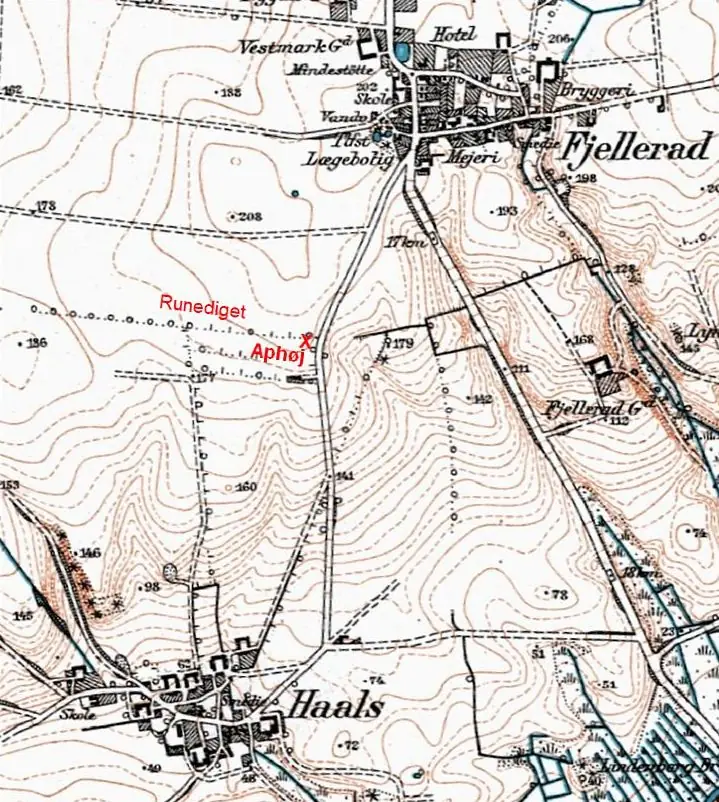
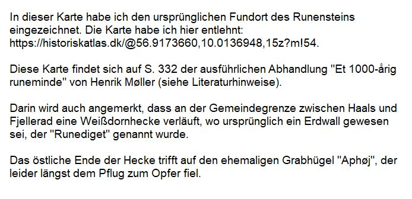
In einem Bericht von Rasmus Henrik Kruse (*07.08.1796 - 30.05.1877, Landschaftsmaler - link-LIVES - Heirat 21.12.1851)
 Bildquelle:
Det Kgl. Biblioteks billedsamling
-
Lizenz:
Public Domain
Bildquelle:
Det Kgl. Biblioteks billedsamling
-
Lizenz:
Public Domain
aus dem Jahr 1841 heißt es: Im Hügel, der nun zur Anlegung einer Kartoffelgrube geöffnet wurde, fand sich keine Steinsetzung und auch keine Gebeine. Aber dafür fand sich mitten im Hügel eine Erdschicht von etwa ½ Elle Dicke (ca. 31,4 cm), die wahrscheinlich aus Asche besteht und die Vermutung zulässt, dass es sich um Leichenreste der verbrannten Toten handelt.
Der bereits o.a. Prof. Ludv. F. A. Wimmer bekam am 09.12.1897 von dem Grundbesitzer Claus Johannsen (*26.08.1841 - 20.12.1931 - link-LIVES) aus Vårst,
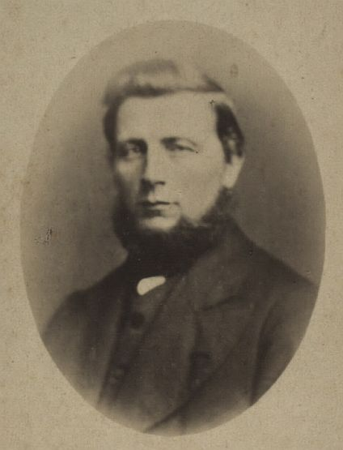
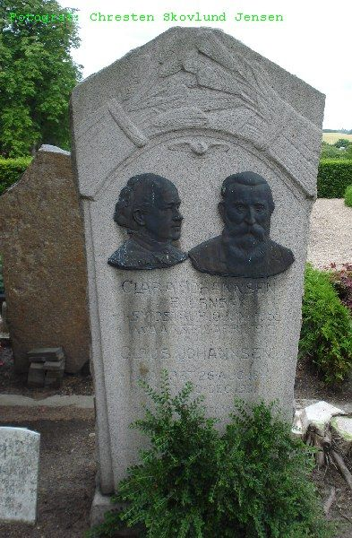
Bildquelle: Det Kgl. Biblioteks billedsamling - Lizenz: Public Domain / Foto Grabstein aus 2009: Chresten Skovlund Jensen / www.dk-gravsten.dk
ein Neffe von Lehrer Claus Johannsen (*19.03.1814 - 21.11.1884, Danebrogmann - link-LIVES)
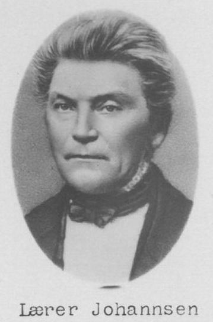
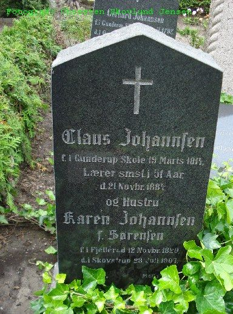
Bildquelle: Skolehistorie - Lizenz: Public Domain / Foto Grabstein aus 2009: Chresten Skovlund Jensen / www.dk-gravsten.dkder, wie unten noch erwähnt wird, einen so großen Beitrag zum Gunderup-Stein geleistet hatte, die Versicherung, dass er genau wisse, wo der Runenstein vor 45 Jahren lag. Er hatte erfahren, dass sich Ludv. F.A. Wimmer in einem Vortrag im Herbst 1897 darüber beklagt hatte, dass der genaue Standort des Hügels wohl kaum mehr feststellbar sei. Daraufhin wandte sich Ludv. F.A. Wimmer an den damaligen Direktor des Nationalmuseum in Kopenhagen, an Sophus Müller (*24.05.1846 - 23.02.1934, dänischer Prähistoriker - link-LIVES)
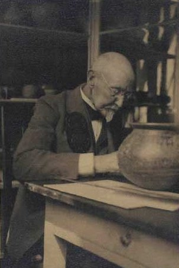
und schlug diesem eine eingehende archäologische Untersuchung vor. Dieser befürwortete dies sofort und sandte Inspektor Carl Peter Neergaard (*05.07.1869 - 30.04.1946; Museumsinspektor, Archäologe - link-LIVES - Politiets registerblade)
 Bildquelle:
Furesø Museer
-
Lizenz:
Public Domain
Bildquelle:
Furesø Museer
-
Lizenz:
Public Domain
mit dem entsprechenden Auftrag im August 1898 vor Ort. Man war nicht davon ausgegangen, dass sich etwas grundlegend Neues findet. Man fand dann zwei längliche, vierkantige Löcher, deren Kanten sich scharf zu dem sie umgebenden hellen Grund abgrenzten, und darin lagen neuere Backsteinbrocken. Diese dürften Reste der Kartoffelgrube gewesen sein, die Rasmus Henrik Kruse in seinem Bericht von 1841 ansprach (siehe oben). Es fanden sich auch keine Spuren der weißen Aschenschicht und nach Neergaards Auffassung war es wohl am ehesten eine feine Schicht grauer oder weißer Erde, die sich gewöhnlich in Grabhügeln findet, die in dem alten Bericht erwähnt worden war.
Die älteste Information/Darstellung zum Runenstein Gunderup 1 stammt jedoch schon von Jon Skonvig (*1600 - 1664, Pfarrer und der Runenzeichner für Ole Worm) aus dem Jahr 1627. Er hat den Stein noch in situ, d.h. noch auf einem kleinen Hügel befindlich, angetroffen und gezeichnet.
Diese Zeichnung hat sich in der Handschrift A.M. 367 fol. erhalten und findet sich darin auf der Seite 14r.
Zu der Zeichnung die im Original 152 mm - Blattgröße 323 mm x 211 mm - in der Höhe misst, hat Jon Skonvig noch die Größe mit (umgerechnet) 251 cm x 94 cm angegeben.
Daneben hat er den Text aufgeschrieben: "Denne steen findiss Vdi Viborg stifft I fleskum herritt, paa Fialrø marck Vdi Gunderup sogn och Er en haard graa kamp 4 all hoÿ, offuen Jorden 1 ½ all bred, och kaldiss Runesteen, och aff nogle Balderss steen som gamle folck berette."
Übersetzung: "Dieser Stein befindet sich im Viborg Stift in Fleskum Herred, auf Fjalrø Mark in der Gemeinde Gunderup und ist ein grauer Felsbrocken 4 Ellen hoch, über der Erde 1 ½ Ellen breit, Runestein genannt oder auch Balders Stein, wie die alten Leute erzählen."
Die Aufzeichnungen - sechs Handschriften - von Jon Skonvig wurden teilweise digitalisert ins Internet eingestellt. In der sogenannten "Arnamagnæanske samling, A.M. 366 fol. - 371 fol." (zu deutsch: Arnamagnäanische Sammlung) finden diese sich heute wieder - www.handrit.is

Am Mittwoch, 28.09.2022, war ich in der Universität Kopenhagen in der Arnamagnæanske Samling und durfte das Original - AM 367 fol. - in Händen halten und eingehend fotografieren. Man bat mich aber von einer Veröffentlichung meiner Fotos abzusehen und stattdessen auf die digitalisierte Handschrift über www.handrit.is zu verweisen.
Im Jahr 1636 hat Ole Worm (*13.05.1588 - 31.08.1654, Arzt, Universalgelehrter und der Begründer der Runologie)
 Bildquelle:
Digitale Sammlung der Königlichen Bibliothek Kopenhagen -
Lizenz:
Public Domain
Bildquelle:
Digitale Sammlung der Königlichen Bibliothek Kopenhagen -
Lizenz:
Public Domain
in seinem Werk "Runir [in Runenzeichen], seu, Danica literatura antiqvissima" auf der S. 56 über Gunderup geschrieben.
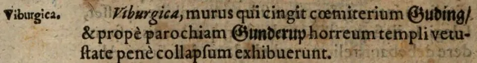
Dieses Buch findet sich heutzutage in digitalisierter Form im Bestand der Österreichischen Nationalbibliothek in Wien.
Die zweite Auflage aus dem Jahr 1651 - dort ist der Eintrag auf der S. 55 - ist zumindest im Internet weiter verbreitet und digitalisiert verfügbar - z.B. über die Digitale Bibliothek Mecklenburg-Vorpommern - https://nbn-resolving.org/urn:nbn:de:gbv:9-g-4876523. Diese Bibliothek stellt kulturhistorisch bedeutsame Quellen für die private und wissenschaftliche Nutzung kostenlos zur Verfügung.
Diese Zeichnung nutzte Ole Worm (*13.05.1588 - 31.08.1654, Arzt, Universalgelehrter und der Begründer der Runologie) als Vorlage für einen Metallschnitt in seinem Werk "Danicorum Monumentorum Libri Sex, Hafniae, 1643".
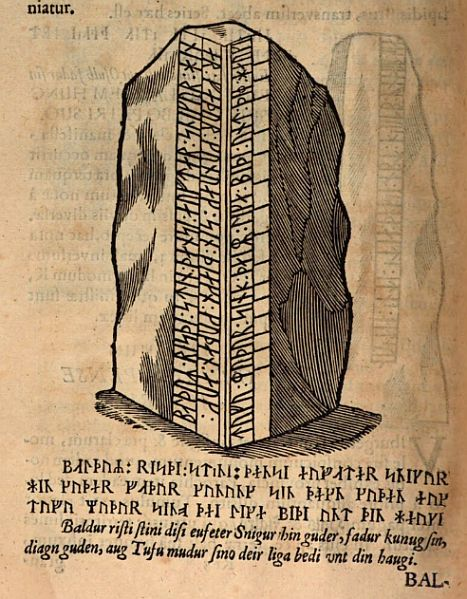
Dieser Screenshot findet sich in einer digitalisierten Ausgabe im Internet über die Bayerische Staatsbibliothek / MDZ Münchener DigitalisierungsZentrum Digitale Bibliothek - urn:nbn:de:bvb:12-bsb10800415-0 - abgerufen 10.11.2022
Die nächste Erwähnung des Runensteins findet sich bei Johannes Meier (1660, Lehrer und Verfasser) in seinem Werk Liber monumentorum Danicorum, qvi monumenta Danica Olai Wormii partim emendat partim locupletat (pdf-Datei anhand eigener Fotos von mir erstellt) von 1654 (Blatt 5) - Königlichen Bibliothek in Kopenhagen - GKS 2371 kvart

 Bildquelle:
Wikipedia - Lizenz:
Public Domain
Bildquelle:
Wikipedia - Lizenz:
Public Domain
hinzugefügt worden sein. Text und Zeichnungen der Handschrift - auch im Zusammenspiel - sind ansehnlicher ausgeführt als in NKS 799.
In der Königlichen Bibliothek in Kopenhagen hat sich von Johannes Meier aber auch noch eine zweite Handschrift erhalten - NKS 799 kvart - Joh. Mejeri Monumenta Runica in Dania (pdf-Datei anhand eigener Fotos von mir erstellt). Deren Entstehungsdatum ist nicht bekannt. Der Runenstein findet sich auf Blatt 4.


Handschrift auf Papier - 44 Blatt, Blatt 41-44 unbeschrieben, aus dem 18. Jahrhundert, vormals Nr. 70 in der Manuskript Sammlung von Peder Frederik Suhm (*18.10.1728 - 07.09.1798)
 Bildquelle:
Wikipedia - Lizenz:
Public Domain
Bildquelle:
Wikipedia - Lizenz:
Public Domain
Es handelt sich um
ein Büchlein mit einfachem Pappeinband, der Buchrücken ist aus Leder und
verstärkte Ecken aus Leder weist der Buchdeckel auf. Es hat die Maße: H: ca. 20
cm / B: ca. 17 cm / D: ca. 1,5 cm. Zu den einzelnen Zeichnungen im Büchlein
wurde ein einfacher Maßstab abgebildet.
Bei beiden Exemplaren
weist immer das rechte Blatt der Doppelseite in der oberen Ecke eine mit
Bleistift geschriebene Seitenzahl auf. Diese beiden Werke sind Abschriften von
früheren Werken, die die Zeit nicht überdauert haben.
Vielleicht sind sie in Kopenhagen beim Großbrand von 1728
vernichtet worden, als neben zahlreichen privaten Beständen auch ca.
35.000 Bücher der Kopenhagener Bibliothek ein Raub der Flammen wurden!
Die
GKS 2371 kvart soll laut
Prof. Ludv. F. A. Wimmer
(*07.02.1839 -
29.04.1920, Philologe und Runenforscher
-
link-LIVES -
Politiets registerblade
-
Bestattungsprotokoll)
Bildquelle:
Fotografie zw. 1877-1900 von Fotograf Hansen & Weller
-
Det Kgl. Biblioteks billedsamling - Lizenz:
Public Domain
und seinen Infos von Christian Walter Bruun (*10.12.1831 - 28.02.1906, Königlicher Oberbibliothekar - link-LIVES)
 Bildquelle: Fotografie
um 1880 von Fotograf J. Petersen
(*19.03.1829 -
01.02.1905) -
Det Kgl. Biblioteks billedsamling - Lizenz:
Public Domain
Bildquelle: Fotografie
um 1880 von Fotograf J. Petersen
(*19.03.1829 -
01.02.1905) -
Det Kgl. Biblioteks billedsamling - Lizenz:
Public Domain
von Niels Foss selbst abgeschrieben worden sein. Er hat die Texte laut den Studien von Erik Moltke (*04.04.1901 - 19.10.1984, Runologe, Historiker - link-LIVES)
 Bildquelle: Scan von Buchumschlag "Runerne i Danmark og ders
oprindelse" - Erik Moltke - 1976 - Lizenz:
CC-BY-SA
Bildquelle: Scan von Buchumschlag "Runerne i Danmark og ders
oprindelse" - Erik Moltke - 1976 - Lizenz:
CC-BY-SA
offenbar überarbeitet, verkürzt oder geändert und seine eigene
Orthografie eingebracht (z.B. alt: haffuer - bei Foss: haver / tyck/tyk /
kircke/kirke / oc/og u.a.).
In der
NKS 799 kvart hingegen steht auf der Seite 37 links unten "Niels
Knudsen Jerne" und seine Handschrift lässt vermuten, dass er die
gesamte Abschrift angefertigt hat. Er war offenbar ein professioneller Schreiber
und könnte mit dem Niels Knudsen identisch sein, der
1728 "Skriverkarl" auf dem Holmen (Stadtviertel von
Kopenhagen) war, also ein Mann der schnell viele Texte schreiben und liefern
konnte. Er wurde am 08.11.1737 zum "ekvipageskriver"
ernannt. Es scheint dass er sich entgegen
Niels Foss sehr eng an das Original gehalten hat.
Offenbar gab es laut dem Katalog über die Büchersammlung
von
Peter
Hansen Resens (*17.06.1625 -
01.06.1688)
 Bildquelle:
Wikipedia - Lizenz:
Public Domain
Bildquelle:
Wikipedia - Lizenz:
Public Domain
"Bibliotheca
Regiæ Academiæ Hafniensi donata" Hafniæ (Kopenhagen) von
1685 - siehe
S. 273 - früher noch ein drittes Werk von
Johannes Meier mit dem Titel "Johan. Meieri
liber MS. de Monumentis Runicis sive antiqvis Danicics".
Quellen:
Erik
Moltke -
Jon Skonvig og de andre runetegnere. Et bidrag til runologiens historie i
Danmark og Norge I-II,
1956-58
Band 2
-
Kapitel 13
Zwischen Montag, 26.09.2022, und Mittwoch, 28.09.2022, habe ich in der Königliche Bibliothek - Den sorte Diamant - in Kopenhagen - u.a. diese beiden alten Handschriften nach Online-Vorbestellung zur Ansicht erhalten. Ich durfte mir Aufzeichnungen machen, sie aber auch uneingeschränkt fotografieren. Ich habe sie mit dem Smartphone komplett als Doppelseiten fotografiert und daraus jeweils eine pdf-Datei erstellt. Vielleicht hat ja jemand Bedarf an diesen seltenen Ausgaben, die aufgrund ihres Alters keinem Urheberrrecht mehr unterliegen.
Peder Hansen Resen (*17.06.1625 - 01.06.1688, Jurist und Historiker) - Er hat mit dem von ihm über 20 Jahre gesammelten Material das großartige Werk "Atlas Danicus", bestehend aus letztlich 39 Folianten, geschaffen. Nur geringe Teile wurden aber schon zu seiner Lebzeit gedruckt. Die Folianten wurden wenige Jahre nach seinem Tod 1692 an die Königliche Bibliothek Kopenhagen übergeben. Aufbewahrt wurden sie auf dem Dachboden der Trinitatis Kirche. Dort wurden sie fleißig studiert, abgeschrieben und zeitweise ausgeliehen. Leider wurde dann ein Großteil davon beim Kopenhagener Großbrand 1728 zerstört. Es hat sich neben einigen Originalseiten - siehe Arnamagnäanische Sammlung - AM 359 fol. / AM 360 fol. / AM 361 fol. und AM 362 fol. (digitalisiert) - nur eine (verkürzte) Abschrift und außerdem Kupferstiche von etwa 200 Städteansichten aus der Vogelperspektive erhalten. Originale dieser AM 359/360/361 fol sind über die Universität Kopenhagen - Institut for Nordiske Studier og Sprogvidenskab (NorS) - AM 359 fol / AM 360 fol / AM 360 fol (Karten) / AM 361 fol - in sw abrufbar. Eine zweite (verkürzte) Ausgabe war von Vincent Lerche (*04.04.1666 - 28.07.1742, Jurist, Architekt) beauftragt worden, diese wurde aber beim Brand von Schloss Christiansborg im Jahr 1794 vernichtet.
In der Königlichen Bibliothek Kopenhagen wird seit 1803 in der Sammlung Uldall 186 folio diese einzige verbliebene Ausgabe, die in den 1750er Jahren durch den Hofbaumeister Laurids de Thurah (*04.03.1706 - 06.09.1759)
 Bildquelle:
Wikimedia - Lizenz:
Public Domain
Bildquelle:
Wikimedia - Lizenz:
Public Domain
aus verstreuten Resten des Atlas Danicus in 7 Bänden rekonstruiert worden war, aufbewahrt:
Wie diesem Titel zu entnehmen ist, gehörte dieses Exemplar vormals Adam Gottlob Graf von Moltke (*10.11.1710 - 25.09.1792, Staatsmann, Diplomat)
 Bildquelle:
Wikimedia - Lizenz:
Public Domain
Bildquelle:
Wikimedia - Lizenz:
Public Domain
Nach dessen Tod erwarb Herman Treschow (*11.12.1739 - 02.05.1797, Professor für Theologie, Pfarrer) diese Ausgabe. Peter Uldall (*29.06.1743 - 11.11.1798, Jurist, Theologe)
 Bildquelle:
Wikimedia - Lizenz:
Public Domain
Bildquelle:
Wikimedia - Lizenz:
Public Domain
wiederum kaufte sie für 170 Rigsdaler (Rigsdaler zu 24 Skilling - damals 1 ½ Mark) nach dessen Ableben. Er hatte aber nicht lange Freude daran, denn er starb ein Jahr später an einem Schlaganfall. Sein Sohn, Justizrat W. A. Uldall, schenkte diese Ausgabe der Kgl. Bibliothek im Jahr 1803, wo dieses großartige Werk noch heute verwahrt wird - Ein Band hat übrigens die stolze Größe H/B/D von 40 cm x 29,5 cm x 9,5 cm.
Im Atlas VI. ist auf den Seiten 139-141 der Eintrag / die Zeichnung zu den beiden Runensteinen enthalten, die ich am 28.09.2022 vor Ort fotografieren durfte - S. 139 habe ich leider vergessen zu fotografieren :-(


Die beiden Abbildungen der Gunderup Runensteine wurden jeweils den Stichen, die Ole Worm in seinem Werk "Danicorum Monumentorum Libri Sex, Hafniae, 1643" verwendet hat, nachempfunden.
Der lateinische Text lautet übersetzt:
S. 139 - ...An gleicher Stelle in der Gemeinde Gunderup heißt es, dass die Kirche der Stadt Gunderup früher ein Ort war, an dem die Bischöfe zusammenkamen, wenn sie wichtige Angelegenheiten besprechen wollten. Im selben Dorf gibt es zwei mit Runenbuchstaben beschriftete Steine, der erste ist 3 ½ Ellen lang, aber ¾ Ellen breit.
S. 140 - Er steht in einer Scheune und hat folgende Inschrift und Aussehen: - Zeichnung - Der Text lautet: "Eustin sati stin donsi ept Osulb fadur sin". Die Bedeutung ist: "Austen errichete diesen Stein für seinen Vater Osalbus". Der andere steht auf einem Hügel zwischen den Dörfern Hals und Fialro und ist, soweit er sich über dem Boden erhebt, mehr als vier Ellen lang, aber eine Ellen breit. Er wird von manchen Runenstein, von anderen Balderstein genannt. - Die Form und Inschrift sehen so aus - Zeichnung - Der Text lautet: "Baldur risti stini disi eufeter Snigur hin guder, fadur kunug sin, diagn guden, aug Tufu mudur sino deir liga bedi vnt din haugi." Die Bedeutung ist: "Balder errichtet diesen Stein für den guten König Snigo, seinen Vater, den besten Mann, und Tufa, seine Mutter. Beide liegen in diesem Hügel.
S. 141 - Worm schreibt in seiner Monumenta, dass dieser Balder nicht derselbe war, den Saxo in seinem dritten Buch erwähnt, da dieser Odin zum Vater hatte, sondern dass der Sohn von König Snio den Spitznamen Eddel trägt, so dass er in den Friesischen Annalen deshalb Eddel Balder genannt wird.."
Quelle: Peder Hansen Resens Atlas Danicus, VI, B: Viborg Bispedømme, i dansk Oversættelse ved Chr. Behrend udgivet af Gunnar Knudsen, 1933 (S. 117-118) - darüber habe eine Übersetztung vom Dänischen ins Deutsche vornehmen können.
Erik Pontoppidan (der Jüngere, *03.09.1698 - 20.12.1764, dänisch-lutherischer Bischof, Theologe und Autor)
 Bildquelle:
Wikipedia - Lizenz:
Public Domain
Bildquelle:
Wikipedia - Lizenz:
Public Domain
hat über diesen Runenstein bereits in seinem 1730 erschienen Werk "Theatrum Daniæ veteris et modernaæ oder: Schau-Bühne des alten und jetzigen Dännemarks", S. 419, berichtet. Darin heißt es in deutscher Sprache:
".../ daß in hiesiger Gegend / und zwar im Kirchspiel Gunderup / zwischen Hals und Fiarlo befindliche sehenswürdige Monument, des heidnischen Königs Snio, und seiner Gemahlin Tufu. Der mitten auf dem Hügel stehende Stein ist viereckig/von denen Bauren Buldersteen genannt/4 Ellen hoch/und fast 2 breit/daran ist folgende Inscription mit alten Runischen Buchstaben eingeätzet zu lesen.
Baldur risti Stini disi eufeter Snigur hin
Guder fadur Kunug Sin; Diagn Guden aug Tufu
Mudur Sino deir liga bedi unt din haugi.
Das ist: Balder setzte diesen Stein über den guten König Snio, seinen Vater / und Tufu, seiner Mutter. Sie liegen beyde unter diesem Hügel. Es ist nur ein König dieses Nahmens in Dännemark gewesen / und selbiger hat regieret ohngefehr am Ende des vierdten Seculi, das Jahr des Todes weiß keiner gewiß. ...
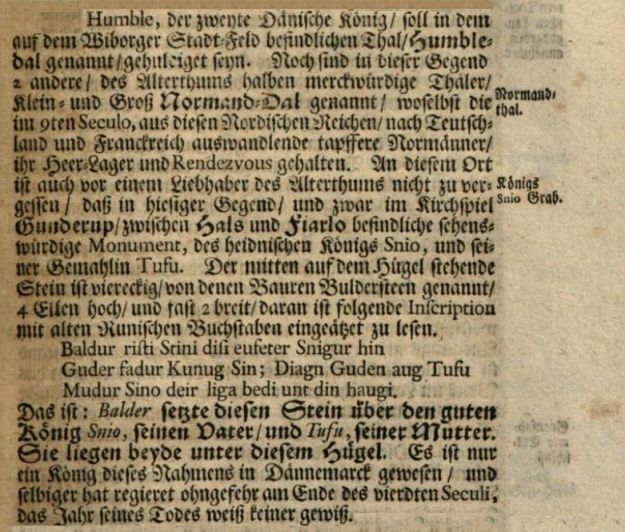
Eine kurze Erwähnung zur Existenz der beiden Runensteine von Gunderup bringt Erik Pontoppidan (der Jüngere, *03.09.1698 - 20.12.1764, dänisch-lutherischer Bischof, Theologe und Autor) im Jahre 1741 außerdem noch in seinem Werk "Marmora Danica selectiora II" auf der S. 233.
In dem ebenfalls von Erik Pontoppidan begründeten Werk "Den Danske Atlas", Band V, Cap 1, Del 1, S. 56 (S. 33 e in der pdf-Datei) wird im Jahr 1769 darüber berichtet, dass der Runenstein, der sogenannte "Balder-Stein" vom Hügel heruntergefallen sei!
Im Jahre 1769 hat Søren Abildgaard (*18.02.1718 - 02.07.1791, Zeichner, Kupferstecher und Geologe)
 Bildquelle:
Jellingprojektet - Lizenz:
Public Domain -
http://www5.kb.dk/images/billed/2010/okt/billeder/object444188/da/
Bildquelle:
Jellingprojektet - Lizenz:
Public Domain -
http://www5.kb.dk/images/billed/2010/okt/billeder/object444188/da/
den Runenstein gezeichnet. Das Original hat eine Größe von 25 x 38 cm.
Darunter hat er diesen Text aufgeschrieben: "Denne Rune-Steen ligger paa wild Mark en halv Miils Vej fra Lindenborg imellem Byerne Fiellerad og Hals [i Gunderup Sogn, Fleskum Herred]. Mere af Skriften end Tegningen viser, kunde ieg ikke se eller kende, uagtet ieg giorde 2de Reiser til den, men begge Gange indtraf Regnagtig og Mørk eller taaget Wejr. Desuden var den Side med de 2de Linneder, som vendte Norden begroet med Mos, som ieg ikke kunde faa afskrabet."
Übersetzung: "Dieser Runenstein liegt auf einem freien Feld, eine halbe Meile von Lindenborg entfernt, zwischen den Ortschaften Fiellerad und Hals [in der Gemeinde Gunderup, Fleskum Herred]. Ich konnte nicht mehr von der Schrift sehen oder erkennen, als das was die Zeichnung zeigt, obwohl ich 2. Ausflüge dorthin machte, aber beide Male trat regnerisches, dunkles oder nebliges Wetter auf. Außerdem war die Seite mit der 2. Linienreihe, die nach Norden zeigte, mit Moos bedeckt, das ich nicht abkratzen konnte."
Quelle: Der digitalen Sammlung des Nationalmuseums Kopenhagen entnommen - Lizenz: CC-BY-SA
Die Inschrift ist bei ihm - im Vergleich zu den anderen frühen Überlieferungen - nur teilweise wiedergegeben. Dies liegt sicher daran, dass Abildgaard stets nur das zeichnete was er wirklich sicher erkennen konnte. Die widrigen Witterungsverhältnisse, auf die er oben abhebt, haben ihm die Erkennung offenbar massiv erschwert.
Außerdem hat er in seinem Tagebuch VI, 1769, Blatt 5, diese Notiz zu dem Runenstein aufgenommen (dazu Infos und die Abzeichnung der Runen zum Stein 2).
Seine Tagebücher befinden sich heute im Antiqvarisk-Topografisk Arkiv in Kopenhagen. Dies ist die Fotografie einer Kopie, die auch dort vorgehalten werden und ich dort am 28.09.2022 fertigen durfte.
Jacob Langebek (* 23. Januar 1710 - 16. August 1775, dänischer Historiker und Geheimer Archivar)
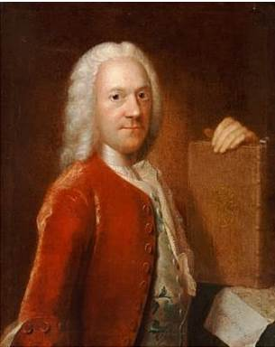
Bildquelle: Wikimedia - Lizenz: Public Domain
hat in seinem handschriftlichen Manuskript "Excerpter 262 - Om Runeskrift og Stene" - ohne Datumsangabe - nur kurz die Verlegung des Runensteins berichtet.
In dem Buch mit dem Titel "Antiqvariske annaler, Band 1, 1812", herausgegeben von der "Kongelige Commission i Kjøbenhavn for Oldsagers Opbevaring (Oldsagskommissionen)" wird im 2. Heft, ab der S. 348 über unter Schutz gestellte Altertümer berichtet. Auf der Seite 367 wird dann auch der Runenstein 1 von Gunderup aufgeführt.
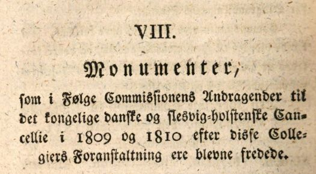
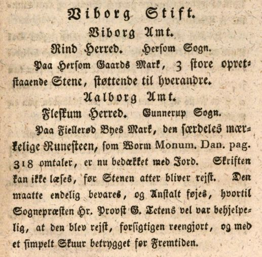
Screenshots aus der digitalisierten Ausgabe der Bayerische Staatsbibliothek / MDZ Münchener DigitalisierungsZentrum Digitale Bibliothek - urn:nbn:de:bvb:12-bsb10451338-2
Erich Christian Werlauff (*02.07.1781 - 05.06.1871, dänischer Historiker - link-LIVES)
Bildquelle:
Wikipedia - Lizenz:
Public Domain
war in der "Nordisk
tidsskrift for oldkyndighed, Band 1.2, 1832" auf den Seiten 283-368
dieser Beitrag veröffentlicht worden: "O
Johan Gustav Liljegren (*27.02.1791 -02.06.1837, schwedischer Nationalarchivar und Archäologe)
 Bildquelle:
Schwedisches Reichsarchiv - Lizenz:
Public Domain
Bildquelle:
Schwedisches Reichsarchiv - Lizenz:
Public Domain
hat den Runenstein Gunderup 1 in seinem Werk "Run-Urkunder" von 1833 auf der S. 172 mit der Nummer 1533 aufgeführt (Nr. 1532 Gunderup 2).
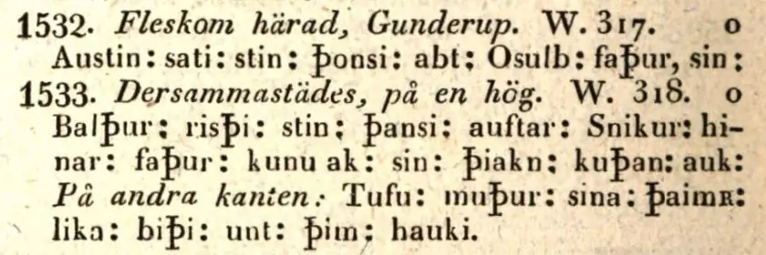
Dieses Werk findet sich in einer digitalisierten Ausgabe im Internet über die Bayerische Staatsbibliothek / MDZ Münchener DigitalisierungsZentrum Digitale Bibliothek - urn:nbn:de:bvb:12-bsb10431145-1 - Screenshot vom 10.11.2022.
Von Rasmus Henrik Kruse (*07.08.1796 - 30.05.1877, Landschaftsmaler - link-LIVES - Heirat 21.12.1851)
Bildquelle:
Det Kgl. Biblioteks billedsamling - Lizenz:
Public Domain
der zahlreiche Runensteine gezeichnet hat, haben sich im "Antikvarisk-Topografisk Arkiv" in Kopenhagen seine Aufzeichnungen mit dem Titel "Nørre Jyllands Mærkværdigheder i det 19. Aarh. Hs. Bd 1-2 (med) Tillæg 1-2" erhalten. Im Band I von 1843 finden sich auf den S. 53-54 Notizen. Im Band II von 1852 hat er weitere Aufzeichnungen auf den S. 33-35 und dazwischen die Zeichnung No. 6 aufgenommen.
1856 besuchte er den Stein ein zweitesmal, wegen der schwer deutbaren Inschrift diesmal mit einer "Inspektions-Order", und fand den Stein nicht mehr umgefallen auf der Südseite des Hügels, sondern nun - auf Veranlassung von Jens Jacob Asmussen Worsaae (*14.03.1821 - 15.08.1885, dänischer Archäologe und Vorgeschichtler) - im Kirchhof von Gunderup vor. Dazu hat er in der "Tillæg I" von 1856 auf den S. 4-5 (über 4 Seiten) noch Ausführungen gemacht.
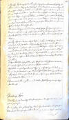 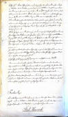 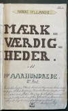 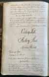 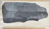 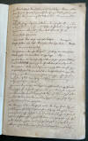 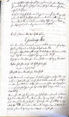


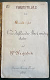 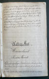 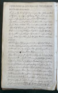 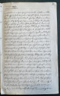 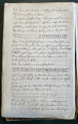
Dieses Kleinod wird heute im Nationalmuseum in Kopenhagen, Antikvarisk-Topografisk Arkiv, aufbewahrt. Dort durfte ich am Dienstag, 27.09.2022, zu Gast sein und die vier Bände in Händen halten und fotografieren - Lizenz: Public Domain
Auch Prof. Jens Jacob Asmussen Worsaae (*14.03.1821 - 15.08.1885, dänischer Archäologe und Vorgeschichtler - link-LIVES - - Bestattungsprotokoll)
Bildquelle: Fotografie
zw. 1863-1900 von Fotograf Budtz Müller
(*26.12.1837 -
30.12.1884) -
Det Kgl. Biblioteks billedsamling - Lizenz:
Public Domain
hat zu dem Runenstein Gunderup 1 in seinem Notesbog X., aus dem Jahr 1850, einen Eintrag auf der S. 104 vorgenommen.

In seinem Notesbog III. aus dem Jahr 1852 hat er auf der S. 45 ergänzende Eintragungen im Hinblick auf die Umsetzung des Runensteins in den Kirchhof von Gunderup vorgenommen, die auf seine Veranlassung hin erfolgte - siehe auch ganz oben.


Dessen Tagebücher werden ebenfalls in Kopenhagen in dem "Antikvarisk-Topografisk Arkiv" aufbewahrt, worüber ich bei meinem Besuch am 27.09.2022 diese Fotos anfertigen konnte.
Die nächste zeitliche Erwähnung findet der Runenstein bei Niels Matthias Petersen (meist N. M. Petersen abgekürzt, * 24. oder 25. Oktober 1791 - 11. Mai 1862, dänischer Sprachwissenschaftler, Literaturwissenschaftler - Skandinavistik - und Historiker.) in seinem Werk "Danmarks Historie i Hedenold, Band III", 2. Auflage 1855, auf der Seite 279, wo er die Inschrift nach Ole Worm wiedergibt.
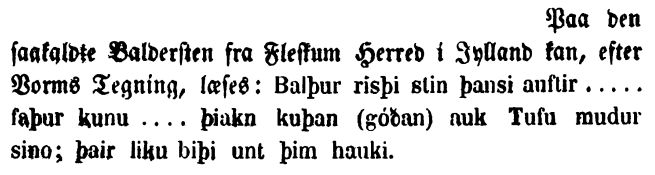
Google Scan 10.11.2022
Carl Christian Rafn (*16.01.1795 - 20.10.1864, Altertumsforscher - link LIVES - Bestattungsprotokoll)
 Bildquelle: Zeichner
Magnus Petersen -
Det Kgl. Biblioteks billedsamling - Lizenz:
Public Domain
Bildquelle: Zeichner
Magnus Petersen -
Det Kgl. Biblioteks billedsamling - Lizenz:
Public Domain
veröffentlichte in seinem Werk von 1856 "Antiquités de l'Orient, monuments runographiques" seine Studien und diese Runenzeichnung - S. 211-215.
Er macht darin auch Ausführungen zu den beiden Besuchen vor Ort im Jahre 1769 von Søren Abildgaard, bei denen dieser jeweils dunkles, regnerisches Wetter hatte, was seine Leseversuche offenbar enorm erschwerte, zumal die Steinoberfläche mit Moos bewachsen war, das er nicht abkratzen konnte. Außerdem spricht er die Zeichnung von 1841 von Rasmus Henrik Kruse und dessen Inschriftsdeutung an. Dann führt er aus (übersetzt): "...Auf Wunsch von mir und dem Pfarrer H. Wulff hat Schullehrer Johannsen diese Inschrift oft unter verschiedenen Lichtverhältnissen betrachtet und untersucht und sich bemüht, ihre schwachen Merkmale zu unterscheiden und wiederzugeben. Seit mehreren Monaten wechsele ich diesbezüglich Briefe mit ihm. Das Ergebnis dieser sorgfältigen Prüfung war zufriedenstellend. Mehrere Abriebbilder der Inschrift, die Cand. Daniel Høffding Wulff - siehe unten - an das Archiv der Gesellschaft übergeben hat, waren für mich ebenfalls von großem Nutzen. Durch die Kombination dieser verschiedenen neuen Darstellungen konnte ich die Inschrift wiederherstellen und ergänzen..."
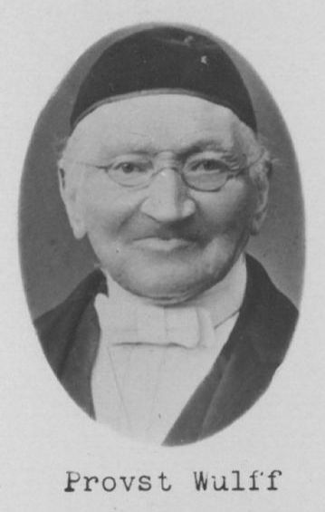
Bildquelle: Skolehistorie - Lizenz: Public Domain - Probst Henrik Wulff (*02.01.1795 in Rendsburg -06.04.1888 - link-LIVES) - Pfarrer der Gunderup Kirche zwischen 1852-71
Bildquelle: Skolehistorie - Lizenz: Public Domain - Lehrer Claus Johannsen (*19.03.1814 - 21.11.1884, Danebrogmann - link-LIVES) - Lehrer in Gunderup 1834-1884
ausführlich mit dem Runenstein beschäftigt hatte. Dessen Erkenntnisse lobte Prof. Ludv. F. A. Wimmer (*07.02.1839 - 29.04.1920, Philologe und Runenforscher - link-LIVES - Politiets registerblade - Bestattungsprotokoll)
Bildquelle:
Fotografie zw. 1877-1900 von Fotograf Hansen & Weller
-
Det Kgl. Biblioteks billedsamling - Lizenz:
Public Domain
später in seinem großen Runenwerk mit den Worten: "Das Ergebnis von Johannsens Nachforschungen hat Carl Christian Rafn in seinen »Antiquités de l'Orient«, Kopenhagen 1856, S. 212 ff., festgehalten, und es ist wahrscheinlich das erste Mal, dass ein Laie, der mit Runen und allem was dazugehört von Anfang nicht vertraut war, so viel aus einer höchst undeutlichen Inschrift und mit so großer Gewissheit herauslesen und unterscheiden konnte zwischen dem was er wirklich sehen konnte, und dem, was für ihn nicht lesbar war."
Die o.a. Abriebbilder der Inschrift wurden durch den Sohn von Probst Henrik Wulff , durch Cand. Daniel Høffding Wulff (*12.05.1829 - 18.09.1900, Oberlehrer, hist. Verfasser - link-LIVES) erstellt und an die Altertümerkommission nach Kopenhagen gesandt.
Bildquelle: Samlinger til Jydsk Historie og Topografi - Lizenz: Public Domain - aus dem Bestand von:
Prof. P. G. Thorsen (*07.08.1811 - 06.05.1883, Bibliothekar, Runenforscher und Historiker - link-LIVES - Artikel: Levnedsbeskrivelser af de ved Københavns Universitets Firehundredaarsfest promoverede Doktorer, Illustreret Tidende 1882, Nr. 1235 - vom 27.05.1833 / Grabstein in Varde / Eheschließung in Varde am 19. August 1848)
 Fotografie
zw. 1863-1900 von
Fotograf Budtz Müller (*26.12.1837 -
30.12.1884) -
Det Kgl. Biblioteks billedsamling - Lizenz:
Public Domain
Fotografie
zw. 1863-1900 von
Fotograf Budtz Müller (*26.12.1837 -
30.12.1884) -
Det Kgl. Biblioteks billedsamling - Lizenz:
Public Domain
betont in seinem Werk "Jyllands Runemindesmærker, Afbildninger og Text, II. Text, 1880" auf der S. 84 ausdrücklich, dass es heutzutage nur noch wenige Runensteine gäbe, die sich noch an ihrem ursprünglichen Platz befänden. Aber als er den Stein 1838 vor Ort untersuchte, könne man sicher sein, dass es bei diesem Runenstein der Fall sei. Nun würde er wahrscheinlich in die Kirche von Gunderup verbracht. Darüber würde er aber aus "seiner Umgebung" gerissen und würde leider viel von seiner Geschichte verlieren. Er führt dort weiter aus, dass der Inschriftteil "sie liegen beide in diesem Hügel" sehr emotional sei und keine Parallele unter den dänischen Steinen hätte.
Er hat in seinem zweiten Teil seines Runenwerks "De danske Runemindesmærker, beskrevne og forklarede af P.G. Thorsen Anden Afdeling - Jyllands Runemindesmærker tilligemed Meddelelser om alle Øernes, Afbildninger og Text, I. Afbildninger, Nr. 26" von 1879 zwei Abbildungen, die jeweils auf einer Zeichnung von Prof. Julius Magnus Petersen (*04.09.1827 - 31.01.1917, Archäologischer Zeichner und Restaurator - link-LIVES - Bestattungsprotokoll)
 Bildquelle: Fotografie
von 1903 von Fotograf Marius Christensen
(*24.06.1874 -
25.06.1907) -
Det Kgl. Biblioteks billedsamling - Lizenz:
Public Domain
Bildquelle: Fotografie
von 1903 von Fotograf Marius Christensen
(*24.06.1874 -
25.06.1907) -
Det Kgl. Biblioteks billedsamling - Lizenz:
Public Domain
dem wohl besten Runensteinzeichner den es je gab, basiert.
Eigener Scan aus dem in meinem Besitz befindlichen Exemplar - 10.02.2025 - Lizenz: Public Domain
P. G. Thorsens Nachlass (Bezeichnet als: P. G. Thorsens optegnelser, tegninger m.m. vedrørende runer og runemindesmærker - überführt aus der Kopenhagener Universitätsbibliothek 1929 - Gemäß Ministerialschreiben vom 04.03.1929; früher benannt als Additamenta 612 kvart - findet sich in der Königlichen Bibliothek unter NKS 3296 (in mehreren einzelnen Pappschachteln). In der Pappschachtel Nr. 5 ist zu Gunderup etwas dabei. Es handelt sich dabei um eine Wiedergabe zu der o.a. Aufzeichnung von Søren Abildgaard, ist mit dem Datum ?. Juli 1838 versehen und wurde m.E. von Thorsen selbst erstellt.

In der Pappschachtel mit der Nummer 17 finden sich dann aber in Thorsens Hinterlassenschaft die originalen Zeichnungen von Magnus Petersen, die wohl als Druckvorlagen zu den o.a. Abbildungen führten.


Diese Zeichnungen sind von Magnus Petersen auf den 04.07.1870, bzw. auf den 05.07.1870 datiert. Außerdem wird in dieser Schachtel 17 noch diese Zeichnung verwahrt, die augenscheinlich mit der o.a. von Rasmus Henrik Kruse identisch ist, bzw. zumindest auf ihr basiert und um einige handschriftliche Bleistiftanmerkungen ergänzt wurde.

Von Magnus Petersen wurden für Prof. Ludv. F. A. Wimmer (*07.02.1839 - 29.04.1920, Philologe und Runenforscher - link-LIVES - Politiets registerblade - Bestattungsprotokoll)
Bildquelle:
Fotografie zw. 1877-1900 von Fotograf Hansen & Weller
-
Det Kgl. Biblioteks billedsamling - Lizenz:
Public Domain
noch diese beiden Zeichnungen angefertigt, die in dessen Runenwerk "De danske runemindesmærker undersøgte og tolkede af Ludv. F. A. Wimmer, Andet Bind, Runestenene i Jylland og på øerne. 1899-1901, S. 9, erschienen. Ludv. F.A. Wimmer selbst hat den Runenstein am 10. und 12.08.1878 untersucht.
Scan aus der in meinem Besitz befindlichen Ausgabe - Lizenz: Public Domain
Ludv. F. A. Wimmer hat seine jahrelangen Aufzeichnungen der "Kgl. Bibliotek" in Kopenhagen überlassen. Ein Verzeichnis darüber wurde 1915 in Buchform herausgegeben - "Collectio runologica Wimmeriana: Fortegnelse over Ludv. F. A. Wimmers runologiske o. a. Samlinger i Det kgl. Bibliotek"
In seinen Unterlagen in der Königlichen Bibliothek befinden sich unter "III - Originaltegninger af de danske Runemindesmærker, udførte paa Undersøgelsesrejserne af Magn. Petersen og kontrollerede paa Stedet af Ludv. Wimmer, samt Prøvetryk af de paa Grundlag af de nævnte Tegninger, Aftryk o. s. v. til De danske Runemindesmærker" udførte Afbildninger med Wimmers Rettelser"


zu dem Runenstein von Gunderup 1 unter der Nr. 20 Aufzeichnungen von 1878, wobei ich am 27.09.2022 diese beiden Zeichnungen von Magnus Petersen - jeweils datiert auf den 12.08.1878 - fotografieren durfte.


Erik Moltke (*04.04.1901 - 19.10.1984, Runologe, Historiker - link-LIVES)
Bildquelle: Scan von Buchumschlag "Runerne i Danmark og ders
oprindelse" - Erik Moltke - 1976 - Lizenz:
CC-BY-SA
hat diese sw Aufnahmen am 17.05.1931 angefertigt.
Foto links - Digitale Sammlung des Nationalmusems Kopenhagen entnommen. Foto rechts - aus dem Buch von Erik Moltke "Jon Skonvig og de andre runetegnere. Et bidrag til runologiens historie i Danmark og Norge, Band I, Billeder og Kildetext, 1956 - S. 69" - Beide unterliegen der Lizenz: CC-BY-SA
Im Vorfeld zu dem 2016 erschienenen Buch von Lisbeth M. Imer (*1973, Runologin am Nationalmuseum Kopenhagen) "Danmarks Runesten - en fortælling" reiste sie mit dem Fotografen Roberto Fortuna zur Bestandsaufnahme durch die Lande. Dieser hat die Runensteine mit Schräglicht aufgenommen und darüber wirklich herausragende Fotos erzielt. Diese Fotografien stammen vom 22.10.2012.
Der Digitale Sammlung des Nationalmusems Kopenhagen entnommen - Lizenz: CC-BY-SA
Die Informationen zu diesem Runenstein aus der dänischen Runendatenbank finden sich hier.
Der entsprechende Eintrag in "Fund og Fortidsminder" ist hier verlinkt. Dort findet sich auch Zustandsbericht des Steinrestaurators Leif Vognsen aus dem Jahr 2018.
Über diesen Link finden sich zu dem Runenstein Informationen des Forschungsprojektes "Runes" der Akademie der Wissenschaften zu Göttingen.
Auf der Webseite "http://www.biopix-foto.de/" findet sich dieses Foto des Runensteins mit rot nachgezeichneten Runen, was die Erkennbar-/Lesbarkeit deutlich verbessert.
Literaturhinweis: Et 1000-årigt runeminde Håls-stenen eller den store Gunderup-stenen - Af Henrik Møller - in "Fra Himmerland og Kjær Herred 1933-1934-1935, 1935, S. 316-337 - hier Online abrufbar
Über Google StreetView kann man inzwischen einen Spaziergang in der Kirche von Gunderup machen. Von außerhalb kommt man über diesen Link per Google StreetView nur bis ins Waffenhaus zu den beiden Runensteinen.
Gunderup 2 - Letztes Update 29.10.2024
Listennummer : DR 144 / DK NJy 47
Transliteration: austain : sati : stain : þąnsi : abt : ąsulb : faþur : sin :
Der ursprüngliche Standort des Runensteins ist unbekannt. Laut der frühesten Nachricht über den Stein - siehe unten - war er da bereits in einer alten, verrotteten Getreidescheune in Gunderup, in der der Kirchenzehnt aufbewahrt wurde, eingesetzt. Laut Ole Worm: "horreo ruinoso, decimis Ecclesiæ capiendis deputato, insertus" - übersetzt: "in einer zerstörten Scheune untergebracht und dazu bestimmt, den Zehnten der Kirche einzunehmen".
Dann wurde er in den Kirchhof von Gunderup verbracht, wo er von Søren Abildgaard (*18.02.1718 - 02.07.1791, Zeichner, Kupferstecher und Geologe)
Bildquelle:
Jellingprojektet - Lizenz:
Public Domain - http://www5.kb.dk/images/billed/2010/okt/billeder/object444188/da/
/
1769 in der nordöstlichen Ecke der steinernen Kirchhofeinfriedung angetroffen wurde. Etwa an der gleichen Stelle war er auch noch 1878, wie einem weiteren Bericht zu entnehmen ist. Seit 1895 befindet er sich zusammen mit dem Runenstein Gunderup 1 im Waffenhaus der Kirche.
Es handelt sich um einen sehr alten Stein mit sogenannten Stutzrunen, was eine Datierung in das 8. Jahrhundert ermöglicht. Auffällig erscheint die Anbringung der Inschrift am Rand des Steins. Teile der Inschrift deuten aufgrund ihrer Schreibweise auf einen norwegischen oder schwedischen Runenmeister - jedoch mit einem dänischen Einschlag - hin. Die einzeilige Inschrift wird von unten nach oben gelesen.
Bildquelle: Zeichnung von Magnus Petersen (*04.09.1827 - 01.02.1917, Archäologischer Zeichner und Restaurator) aus dem Jahr 1878 - Leserichtung von mir visualisiert - Lizenz: Public Domain
Die älteste Darstellung zum Runenstein Gunderup 2 stammt auch hier von Jon Skonvig (*1600 - 1664, Pfarrer und der Runenzeichner für Ole Worm) aus dem Jahr 1627.
Der Digitale Sammlung des Nationalmusems Kopenhagen entnommen. Lizenz: Public Domain
Diese Zeichnung hat sich in der Handschrift AM 367 fol. - Blatt 13v, erhalten.
Die Aufzeichnungen - sechs Handschriften - von Jon Skonvig wurden teilweise digitalisert ins Internet eingestellt. In der sogenannten "Arnamagnæanske samling, A.M. 366 fol. - 371 fol." (zu deutsch: Arnamagnäanische Sammlung) finden diese sich heute wieder - www.handrit.is
Die Zeichnung, die den Stein liegend darstellt, hat im Original 13,5 cm. Jon Skonvig hat die Steingröße mit (umgerechnet) 220 x 40 cm angegeben.
Darunter hat er den Text aufgeschrieben: "Denne steen findiss Wdi Viborrig stifft I fleskum herritt Vdi Gunderup Kircke lade, och Er en haard graa kamp 3 ½ all lang, oc 3 Quaarter bred.".
Übersetzung: "Dieser Stein findet sich im Viborg Stift in Fleskum Herred bei der Gunderup Kirkke und ist ein harter grauer Felsbrocken 3 ½ Ellen lang und 3 Viertel breit."
Am Mittwoch, 28.09.2022, war ich - wie oben bereits erwähnt - in der Universität Kopenhagen in der Arnamagnæanske Samling und durfte das Original - AM 367 fol. - in Händen halten und eingehend fotografieren. Man bat mich aber von einer Veröffentlichung meiner Fotos abzusehen und stattdessen auf die digitalisierte Handschrift über www.handrit.is zu verweisen.
Im Jahr 1636 hat Ole Worm (*13.05.1588 - 31.08.1654, Arzt, Universalgelehrter und der Begründer der Runologie)
Bildquelle:
Digitale Sammlung der Königlichen Bibliothek Kopenhagen -
Lizenz:
Public Domain
in seinem Werk "Runir [in Runenzeichen], seu, Danica literatura antiqvissima" auf der S. 56 über Gunderup geschrieben.
Dieses Buch findet sich heutzutage in digitalisierter Form im Bestand der Österreichischen Nationalbibliothek in Wien.
Die zweite Auflage aus dem Jahr 1651 - dort ist der Eintrag auf der S. 55 - ist zumindest im Internet weiter verbreitet und digitalisiert verfügbar - z.B. über die Digitale Bibliothek Mecklenburg-Vorpommern - https://nbn-resolving.org/urn:nbn:de:gbv:9-g-4876523. Diese Bibliothek stellt kulturhistorisch bedeutsame Quellen für die private und wissenschaftliche Nutzung kostenlos zur Verfügung.
Wie beim Stein 1 nutzte Ole Worm (*13.05.1588 - 31.08.1654, Arzt, Universalgelehrter und der Begründer der Runologie) Jon Skonvigs Zeichnung als Vorlage für einen Metallschnitt in seinem Werk "Danicorum Monumentorum Libri Sex, Hafniae, 1643" (Seite 316 - hier online abrufbar).
Dieser Screenshot findet sich in einer digitalisierten Ausgabe im Internet über die Bayerische Staatsbibliothek / MDZ Münchener DigitalisierungsZentrum Digitale Bibliothek - urn:nbn:de:bvb:12-bsb10800415-0 - abgerufen 10.11.2022.
Der Runenstein sollte aufgrund einer königlichen Verfügung vom 9.2.1652 nach Kopenhagen versandt werden (siehe: Nordisk Tidsskrift for Oldkyndighed, Band 1, 1832, S. 326). In der Anforderung heißt es: "Erich Juel til Aalborghuus Lehn; Gunderup-Stenen". Dieser Anweisung kam man in Gunderup, wie andernorts auch, jedoch nicht nach. Seitens Kopenhagen wurde nicht nachgehakt, da dort 1654 die Pest ausbrach, was auch Ole Worm noch im gleichen Jahr den Tod brachte.
Die nächste Erwähnung des Runensteins findet sich bei Johannes Meier (1660, Lehrer und Verfasser) in seinem Werk Liber monumentorum Danicorum, qvi monumenta Danica Olai Wormii partim emendat partim locupletat (pdf-Datei anhand eigener Fotos von mir erstellt) von 1654 (Blatt 4) - Königlichen Bibliothek in Kopenhagen - GKS 2371 kvart
Daneben findet sich die entsprechende Seite in der NKS 799 kvart - Joh. Mejeri Monumenta Runica in Dania auf der Seite 3.


Hier darf ich jeweils auf die oben gemachten Ausführungen zum Stein 1 verweisen und bringe hier nur die zwei Fotos der jeweiligen Seite.
In der zeitlichen Abfolge kommt jetzt die Erwähnung bei Peder Hansen Resen im Jahr 1677 in seinem großen Werk "Atlas Danicus" - Ausführungen siehe oben zu Stein 1.
Erik Pontoppidan (der Jüngere, *03.09.1698 - 20.12.1764, dänisch-lutherischer Bischof, Theologe und Autor)
Bildquelle:
Wikipedia - Lizenz:
Public Domain
hat den Runenstein in seinem 1741 erschienen Werk "Marmora Danica selectiora. 2", Seite 233, erwähnt
In dem ebenfalls von Erik Pontoppidan begründeten Werk "Den Danske Atlas", Band V, Cap 1, Del 1, S. 56 (S. 33 e in der pdf-Datei) wird der Runenstein im Jahr 1769 erwähnt.
Im Jahre 1769 hat Søren Abildgaard (*18.02.1718 - 02.07.1791, Zeichner, Kupferstecher und Geologe)
Bildquelle:
Jellingprojektet - Lizenz:
Public Domain -
http://www5.kb.dk/images/billed/2010/okt/billeder/object444188/da/
den Runenstein gezeichnet. Das Original hat eine Größe von 19 x 24 cm.
Der Digitale Sammlung des Nationalmusems Kopenhagen entnommen - Lizenz: Public Domain
Unter der Zeichnung hat er diesen Text aufgeschrieben: "Denne Rune-Steen ligger ved Nordostlige Hiörne af Kirkegaards Diget ved Gunderup Kirke i Wiborg Stift, Steenen ligger flak ned paa Jorden med Skriften neden under, dog fik ieg den saa meget oplöftet, at ieg kunde nogenledes komme til at see Runerne, som vare begynderlige smaa. S. Abildgaard."
Übersetzung: "Dieser Runenstein befindet sich an der nordöstlichen Ecke der Kirchhofeinfriedung bei der Gunderup-Kirche in der Diözese Viborg, der Stein liegt flach auf dem Boden mit der Schrift darunter, aber ich habe ihn so weit angehoben, dass ich die Runen grob sehen konnte, die anfangs klein waren."
Außerdem hat er in seinem Tagebuch VI, 1769, Blatt 5, eine Notiz zu dem Runenstein und die Abzeichnung der Runen vorgenommen - siehe Bild zum Stein 1 oben.
Von Rasmus Henrik Kruse (*07.08.1796 - 30.05.1877, Landschaftsmaler - link-LIVES - Heirat 21.12.1851)
Bildquelle:
Det Kgl. Biblioteks billedsamling - Lizenz:
Public Domain
habe ich oben bereits berichtet. Im "Antikvarisk-Topografisk Arkiv" in Kopenhagen haben sich seine Aufzeichnungen in mehreren Bänden bewahrt. Im Band I von 1843 finden sich auf den S. 53-54 Notizen zu diesem Runenstein. Im Band II von 1852 hat er weitere Aufzeichnungen auf der S. 35 und dazu die Zeichnung No. 7 aufgenommen.
 Lizenz:
Public Domain
Lizenz:
Public Domain

Auch Prof. Jens Jacob Asmussen Worsaae (*14.03.1821 - 15.08.1885, dänischer Archäologe und Vorgeschichtler - link-LIVES - Bestattungsprotokoll)
Bildquelle: Fotografie
zw. 1863-1900 von Fotograf Budtz Müller
(*26.12.1837 -
30.12.1884) -
Det Kgl. Biblioteks billedsamling - Lizenz:
Public Domain
hat zu dem Runenstein Gunderup 1 in seinem Notesbog X., aus dem Jahr 1850, einen Eintrag auf der S. 105 vorgenommen - siehe Eintrag zu Stein 1.
Auch Carl Christian Rafn (*16.01.1795 - 20.10.1864, Altertumsforscher - link LIVES - Bestattungsprotokoll)
Bildquelle: Zeichner
Magnus Petersen -
Det Kgl. Biblioteks billedsamling - Lizenz:
Public Domain
studierte den Runenstein. Er veröffentlichte dann in seinem Werk von 1856 "Antiquités de l'Orient, monuments runographiques" die Runenzeichen in einer Linie (S. 215).
Prof. Julius Magnus Petersen (*04.09.1827 - 31.01.1917, Archäologischer Zeichner und Restaurator - link-LIVES - Bestattungsprotokoll)
Bildquelle: Fotografie
von 1903 von Fotograf Marius Christensen
(*24.06.1874 -
25.06.1907) -
Det Kgl. Biblioteks billedsamling - Lizenz:
Public Domain
hat von dem Runenstein für Prof. P. G. Thorsen (*07.08.1811 - 06.05.1883, Bibliothekar, Runenforscher und Historiker - link-LIVES - Artikel: Levnedsbeskrivelser af de ved Københavns Universitets Firehundredaarsfest promoverede Doktorer, Illustreret Tidende 1882, Nr. 1235 - vom 27.05.1833 / Grabstein in Varde / Eheschließung in Varde am 19. August 1848)
Fotografie
zw. 1863-1900 von
Fotograf Budtz Müller (*26.12.1837 -
30.12.1884) -
Det Kgl. Biblioteks billedsamling -
Lizenz:
Public Domain
und dessen 1879 erschienenes Runenwerk "De danske Runemindesmærker, beskrevne og forklarede af P.G. Thorsen Anden Afdeling - Jyllands Runemindesmærker tilligemed Meddelelser om alle Øernes" Afbildninger og Text, I. Afbildninger" eine Zeichnung gefertigt, die darin als Nr. 54 erschien.
Eigener Scan aus dem in meinem Besitz befindlichen Exemplar - 10.02.2025 - Lizenz: Public Domain
Der Textbeitrag zu dem Runenstein findet sich hingegen in seinem Band II. aus dem Jahr 1880 ab der S. 151-52.
In der Hinterlassenschaft von P.G. Thorsen - Erläuterungen siehe oben zu Runenstein 1 - in der Pappschachtel mit der Nummer 17, finden sich zwei Zeichnungen des Runensteins. Eine Zeichnung stammt von Magnus Petersen (*04.09.1827 - 01.02.1917, Archäologischer Zeichner und Restaurator) und ist auf den 05.07.1870 datiert. Die andere Zeichnung wurde wohl von Rasmus Henrik Kruse (*07.08.1796 - 30.05.1877, Landschaftsmaler) gefertigt oder wurde von P. G. Thorsen sehr gut nachgezeichnet.


Durch Magnus Petersen wurde 1878 diese Zeichnung für Prof. Ludv. F. A. Wimmer (*07.02.1839 - 29.04.1920, Philologe und Runenforscher - link-LIVES - Politiets registerblade - Bestattungsprotokoll)
Bildquelle:
Fotografie zw. 1877-1900 von Fotograf Hansen & Weller
-
Det Kgl. Biblioteks billedsamling - Lizenz:
Public Domain
angefertigt, die in dessen Runenwerk De danske runemindesmærker undersøgte og tolkede af Ludv. F. A. Wimmer, Første Binds første afdeling, Almindelig inledning, 1907-1908, S. CXLI, erschien.
Prof. Ludv. F.A. Wimmer selbst hat den Runenstein am 10. und 12.08.1878 untersucht.
Scan aus der in meinem Besitz befindlichen Ausgabe - Lizenz: Public Domain
Prof. Ludv. F. A. Wimmer hat seine jahrelangen Aufzeichnungen der "Kgl. Bibliotek" in Kopenhagen überlassen. Ein Verzeichnis darüber wurde 1915 in Buchform herausgegeben - "Collectio runologica Wimmeriana: Fortegnelse over Ludv. F. A. Wimmers runologiske o. a. Samlinger i Det kgl. Bibliotek"
Die Originalzeichnung vom 10.08.1878 von Magnus Petersen befindet sich als Nummer 250 unter "Fremmede Runemindesmærker i Danmark" in seinen Unterlagen in der Königlichen Bibliothek in Kopenhagen "III - Originaltegninger af de danske Runemindesmærker, udførte paa Undersøgelsesrejserne af Magn. Petersen og kontrollerede paa Stedet af Ludv. Wimmer, samt Prøvetryk af de paa Grundlag af de nævnte Tegninger, Aftryk o. s. v. til De danske Runemindesmærker" udførte Afbildninger med Wimmers Rettelser". Davon habe ich am 26.09.2022 dieses Foto gemacht.

Erik Moltke (*04.04.1901 - 19.10.1984, Runologe, Historiker - link-LIVES)
Bildquelle: Scan von Buchumschlag "Runerne i Danmark og ders
oprindelse" - Erik Moltke - 1976 - Lizenz:
CC-BY-SA
hat diese sw Aufnahmen am 17.05.1931 angefertigt - Rechts Scan aus: Erik Moltke "Jon Skonvig og de andre runetegnere. Et bidrag til runologiens historie i Danmark og Norge, Band I, Billeder og Kildetext, 1956 - S. 65".
Der Digitale Sammlung des Nationalmusems Kopenhagen entnommen - Beide Bilder unterliegen der Lizenz: CC-BY-SA
Im Vorfeld zu dem 2016 erschienenen Buch von Lisbeth M. Imer (*1973, Runologin am Nationalmuseum Kopenhagen) "Danmarks Runesten - en fortælling" reiste sie mit dem Fotografen Roberto Fortuna zur Bestandsaufnahme durch die Lande. Dieser hat die Runensteine mit Schräglicht aufgenommen und darüber wirklich herausragende Fotos erzielt. Diese Fotografien stammen vom 22.10.2012.
Der Digitale Sammlung des Nationalmusems Kopenhagen entnommen - Lizenz: CC-BY-SA
Die Informationen zu diesem Runenstein aus der dänischen Runendatenbank finden sich hier.
Der entsprechende Eintrag in "Fund og Fortidsminder" ist hier verlinkt. Darin ist inzwischen dieser Zustandsbericht des Steinrestaurators Leif Vognsen aus dem Jahr 2018 eingebettet.
Über diesen Link finden sich zu dem Runenstein Informationen des Forschungsprojektes "Runes" der Akademie der Wissenschaften zu Göttingen.
Auf der Webseite "Biopix" findet sich dieses Foto des Runensteins mit rot nachgezeichneten Runen, was die Erkennbar-/Lesbarkeit deutlich verbessert.
Über Google StreetView kann man inzwischen einen Spaziergang in der Kirche von Gunderup machen. Von außerhalb kommt man über diesen Link per Google StreetView nur bis ins Waffenhaus zu den beiden Runensteinen.